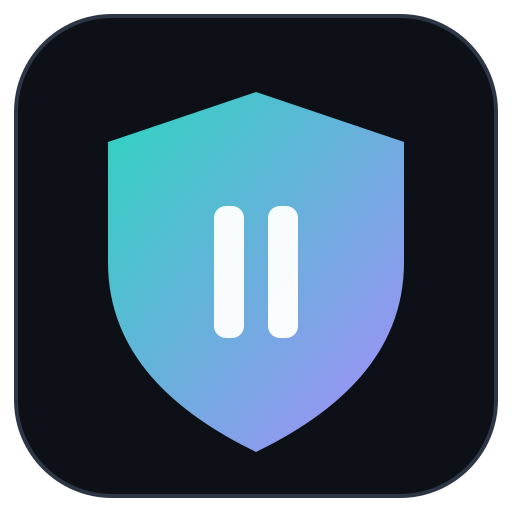

Hybrid Shield
Credit & Contract Hybrid Shield
돈 보내기 전, 서명하기 전 — 의심스러운 문자를 먼저 검사하세요. 붙여넣고 검사 한 번이면, 위험한지·판단할 근거가 부족한지 바로 알려드립니다. 개인정보는 이 기기 안에서 가려지고, 밖으로 나가지 않습니다.
- 99.993%사기 문자 방어율 (실측)
- 0정상 문자 오탐 (실측)
- 100,000건으로 검증
이 방패는 사기를 “원천 차단”하지 않습니다. 피해가 확정되기 전 마지막 관문입니다.
어떻게 동작하나요?
기기 안에서 먼저 검사합니다. 의심스러운 문자, 이메일, 계약 문구를 돈 보내기 전·서명하기 전에 붙여넣으세요. 이름·계좌 같은 개인정보는 이 기기 안에서 가려지고 기기를 떠나지 않습니다. 더 깊은 분석이 필요할 때만 가려진 뼈대를 클라우드로 보내며, 보낸 내용은 결과 화면에서 전부 확인할 수 있습니다.
- On-device (Gemini Nano): checking…
- Cloud (Firebase AI Logic): checking…
- App Check: checking…
1 · Text to check
마켓플레이스 메시지·첨부가 있으면 표시하기 (선택)
Fiverr 같은 마켓플레이스에서 받은 메시지라면 아래를 표시해 주세요. 첨부는 열지 말고, 있다는 것과 형식만 알려 주시면 됩니다. 파일명은 검사·기록 어디에도 남지 않습니다.
2 · What stays on this device
Masked preview — placeholders replace personal data before anything else happens:
(nothing yet)
검사 결과
아직 검사한 내용이 없습니다.
왼쪽(모바일에서는 위쪽)에 의심스러운 문자를 붙여넣고 검사 버튼을 누르면, 결과가 여기에 크게 표시됩니다.
No analysis yet.
What to do
Evidence
Isolated on this device
0 items masked.
Escalation log
No cloud call yet — everything so far ran on this device.
기술 세부 정보
Cloud budget
0 / 20 calls this session.
Stage timings (measured)
—